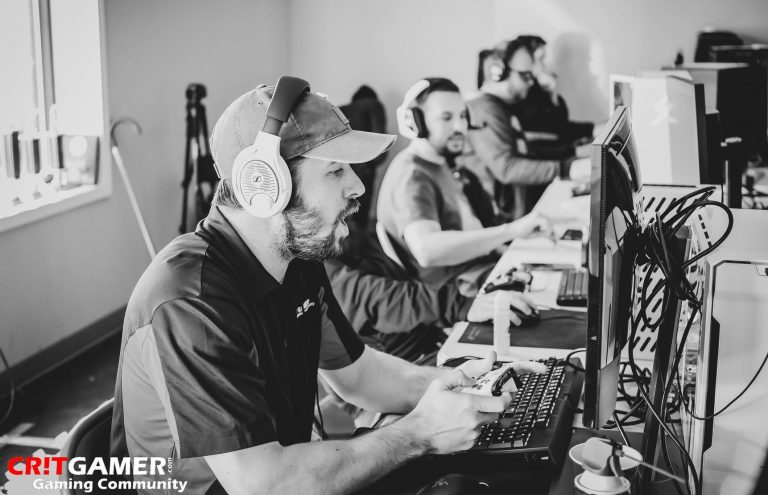

Due to COVID-19 we are suspending all events until further notice
Please check back often as we will update you via email and this site for future events
Please check back often as we will update you via email and this site for future events

Critgamer was originally started in 2009 as a YouTube Channel with an online blog for content creation and sharing. During the preliminary phases of the brand we realized there was demand for a consistent LAN Gaming Community in our local area
In 2014 we started marketing as a LAN Gaming Community. Our primary focus is on creating a competitive exciting gaming environment for the East Texas Community. We have since built an organization that will continue to build on the traditions of LAN BYOC and community gaming. These events are hosted quarterly at local venues with help from our generous sponsors.
Our goal is to expand this brand and the culture of LAN Gaming across Texas and beyond…
Due to COVID-19 we are suspending all events until further notice Please check back often as we will update you via email and this site for future events
Chapel Hill Fire Department
13801 County Rd 220 - Tyler, TX 75707
https://goo.gl/maps/auYApWxTurK2
8:00AM (Setup) 10:00am (Start) 11:30pm (End)
08:00 AM - Doors Open (Setup)
11:00 AM - Super Intense Gaming
01:00 PM - Pending
02:30 PM - Pending
04:00 PM - Rocket League Tournament 3v3
06:00 PM - Rocket League Tournament 2v2
07:00 PM - Pending
09:00 PM - Super Intense Gaming
11:30 PM - LAN End/Cleanup
Above all have fun! We will have a great time! Profanity is tolerated to an extent and you must respect the boundaries of your peers.
*By registering for and attending this event you release Critgamer Gaming Community from all liability of property loss or injury. You also understand while participating in this event, you may be photographed. You agree to allow your photo, registration information, video, or film likeness to be used for any legitimate purpose by the activity holders, producers, sponsors, organizers, and assigns. *
IF ANY QUESTIONS ARE NOT ANSWERED HERE - Contact Us!
Walk-ins are welcome. But those that don’t pre-register online will end up completing the exact same process at the event during the first step of on-site registration. This is to keep the numbers of registrants consistent.
The Bring Your Own Computer (BYOC) area at “The LAN”. We provide the tables, chairs, power, and enormous gaming network; you bring your computer that’s ready-to-play your favorite video games. It’s just about that simple. Servers and open network shares will be provided for sharing games. You CAN also bring your own chair to the event.
You should bring your computer (1 tower/desktop or laptop), 1 monitor, and any peripherals within reason that you want to use at the event like a keyboard, mouse, and HEADPHONES ONLY (NO SPEAKERS). Please bring an enclosed computer in a case, nothing external. This is an open environment where space is precious.
We’re relatively flexible. The tables in “The LAN” are six foot folding tables (2 persons per table), and each attendee seat is half of a table (three feet). You should plan to fit everything you bring with you well-enough inside of that space that you’re a good neighbor to your fellow attendees. Please Contact Us! if you think you need a special consideration. Please don’t plan on bringing anything to place in an aisle. It’s important to the safety of other attendees that our footpaths remain clear should there be an emergency.